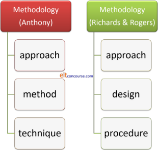

What is methodology? An essential guide
 |
| Methodology: a way of getting from here to there |
A dictionary definition of methodology is a system of methods used in a particular area of study or activity
This is a very brief guide. For more in this area, see the list of related guides, linked at the end.
There are two common ways to define methodology in English Language Teaching and, graphically, this is how they look:

The left-hand set was developed by Anthony in 1963. The right-hand set was developed from Anthony's definition later and appears in Richards and Rogers, 2001. Briefly:
- Approach
- For Anthony, an approach was simply a
set of principles or ideas about the nature of language learning.
For Richards and Rogers it was similar but explicitly divided into theories of what language is and theories of how learning a foreign language happens.
The second of these definitions has the advantage of being quite explicit. - Method or Design
- In this section are lesson designs such as
Present–Practice–Produce or Test–Teach–Test. Those are not
methods, they are ways of structuring lessons within methods.
For Anthony, method described the plan for the presentation of language which is consistent with the approach.
Richards and Rogers' concept of design is somewhat broader and covered the practical implications in the classroom: syllabus design, activities and the roles of teachers and students.
These are not all that different but again, the latter one is more explicit. - Technique or Procedure
- Technique, for Anthony, was just any teaching trick or way
of doing something in the classroom such as eliciting,
approaching a reading text, encouraging authentic speaking,
drills and so on.
For Richards and Rogers, too, the term procedure refers to what we see happening in the classroom when a particular approach and design are implemented.
It actually doesn't matter all that much which breakdown you accept. Both are fairly arbitrary and subjective ways of breaking down a complex area.
 |
Methodology in practice |
It is worth pointing out that not all methodologies will fit
neatly into the categories above.
For example, Communicative Language Teaching, the current dominant
methodology, has a good theory of language but little to say
concerning a theory of learning. Some earlier methodologies
such as Situational Language Teaching were similarly deficient but
some, audio-lingualism, for example, had very clear theories both of
what language actually is and how people learn languages.
The extent to which, if at all, the various models and concepts of language and learning actually reflect reality is, of course, quite another matter.
It is, however, often quite possible to work backwards from what is observed in the classroom (techniques and procedures) and deduce the approach a teacher favours or to work from the materials an institution uses (the method or design) to see what principles (the approach) the institution is favouring. The Delta examination, e.g., explicitly asks you to do that.
 |
What is not methodology |
It is common for some ways of doing things to be referred to as method or methodology but this is to misunderstand the terms as they are used in our field. In non-technical language, of course, method just means a way of doing something but that is not how it should be used in ELT. For example:
- Structuring a lesson along the lines of Test > Teach > Test or Presentation > Practice > Production is not to use a methodology. It is simply a way to arrange procedures and tasks in a lesson. Both these structures can inhabit very different methodologies.
- Taking an inductive approach in which learners are asked to figure out the patterns and rules from language examples or a deductive approach in which learners are given the rule and asked to apply it to language are just ways to approach making things learnable and accessible. Neither qualifies as a methodology.
- Making lessons learner centred by, for example, negotiating the syllabus with the learners, making feedback routines come from the class rather than the teacher or encouraging peer-teaching and peer-correction does not count as a methodology. It may be an approach to classroom management but it is not a methodology.
- Even approaches taken by people who claim to be employing a methodology may not really qualify. Dogme, for example, is an approach to teaching which sits comfortably within Communicative Language Teaching so it is probably better described as an approach to lesson design rather than grandly calling it a methodology. Task-Based Learning and Teaching is another example of something often called a methodology but one that fits more comfortably into Anthony's concept of a Method or Richards and Rogers' category of Design because the methodology into which it fits is clearly communicative.
For more on the differences between theories of learning and language, hypotheses about learning, procedures and techniques, see the guide to methodology refined, linked below.
If you yearn for more in this area, follow the links here.
| Related guides | |
| methodology essentials | this guide considers three sets of related methodologies |
| the history and development of ELT | which includes much of what precedes here and a good deal more |
| methodology refined | for most of the above and great deal more that attempts to break things down in the in-service section |
| post-method methodology | a guide in the in-service section which considers the implications of the rejection of all methodologies |
| some alternative methodologies | this guide considers five alternative methodologies: Silent Way, Total Physical Response, Community Language Learning, Suggestopaedia and Dogme |
| the in-service methodology index | which has links to guides which consider a range of methodologies separately |
| how learning happens | which covers some learning theory |
| first- and second-language acquisition | which considers differences and similarities |
| second-language acquisition theories | which looks at how second languages are learned or acquired |
References:
Anthony, EM, 1963, Approach,
Method, and Technique, ELT Journal (2): 63–43, Oxford: Oxford
University Press
Richards, J, and Rodgers, T, 2001, Approaches and Methods in
Language Teaching, Cambridge: Cambridge University Press